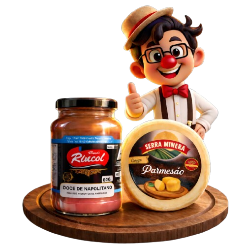
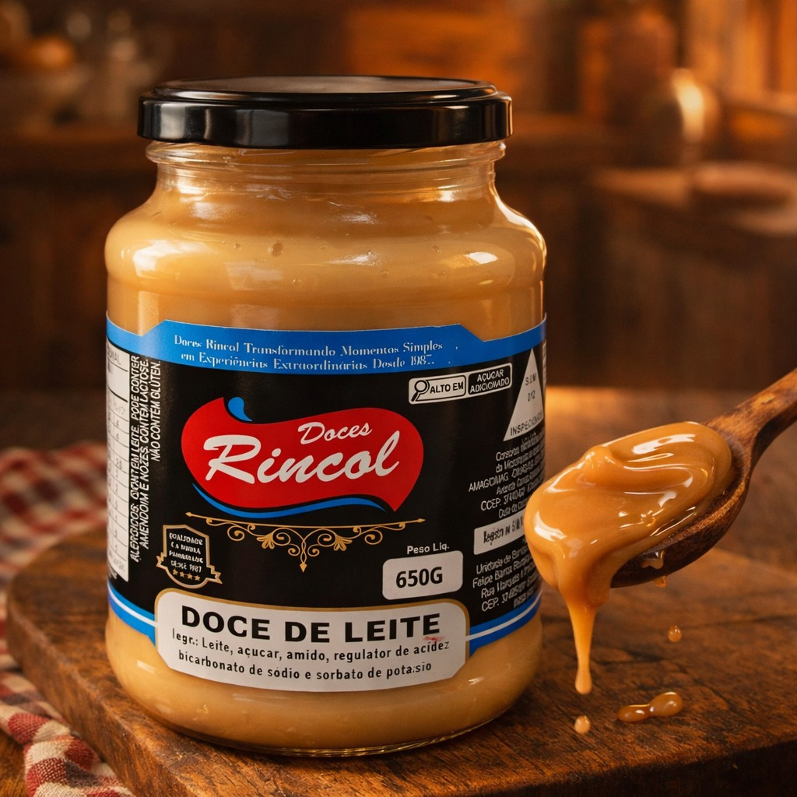
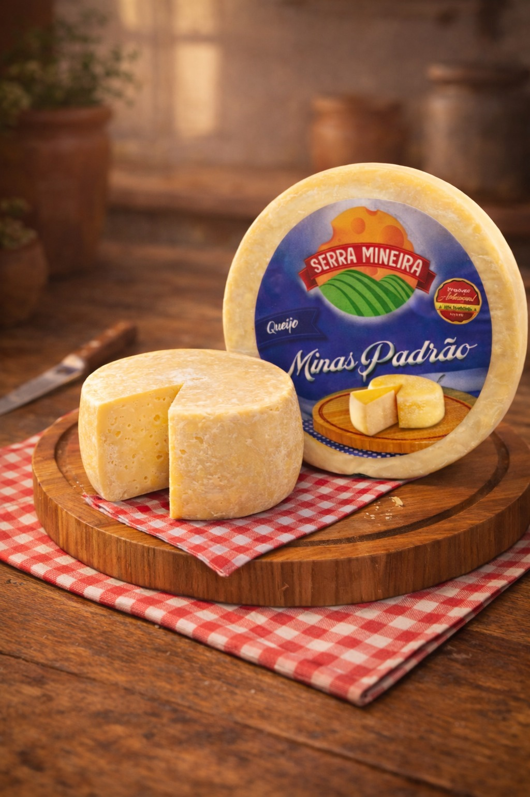

Delícias do Pipoca
Doces de leite artesanais
e queijos selecionados

Mais de 100 clientes satisfeitos!
Resultados - Janeiro,Março🧀 Qualidade artesanal
🤝 Entrega humanizada
⭐ Clientes satisfeitos
⭐⭐⭐⭐⭐
Mais de 100 clientes já provaram essas delíciasEm 1998, Nil Moraes enfrentou um grande desafio: um câncer. Após a cura, aquele momento marcou um verdadeiro recomeço em sua vida. Foi nesse período que nasceu uma figura muito querida em Jacareí:o Palhaço Pipoca, levando alegria e presença às pessoas.
Essa caminhada transformou seu olhar sobre a vida — valorizando algo simples e essencial: escutar, cuidar e estar presente. E foi dessa história que nasceu o Delícias do Pipoca. Mais do que levar queijos e doces especiais até você, o propósito é claro: entregar qualidade com carinho e um atendimento verdadeiramente humano.

Clássico e cremoso, feito com sabor intenso de leite.
Combinação perfeita entre o doce de leite e o sabor do coco.
Equilíbrio delicioso entre a cremosidade do leite e a leve acidez do morango.

Extremamente cremoso, suave e levemente amanteigado.
Sabor equilibrado com maturação artesanal.
Clássico brasileiro, firme e muito versátil.
Cada queijo carrega um pedaço da tradição mineira, feito para reunir pessoas e transformar momentos simples em memórias especiais.
Também trabalhamos com nozinho, cabacinha, muçarela, frescal, trança e provolone — alguns disponíveis nas versões temperadas, defumadas ou brancas.
Porque cada mesa tem sua própria história.
E cada história merece um sabor especial.